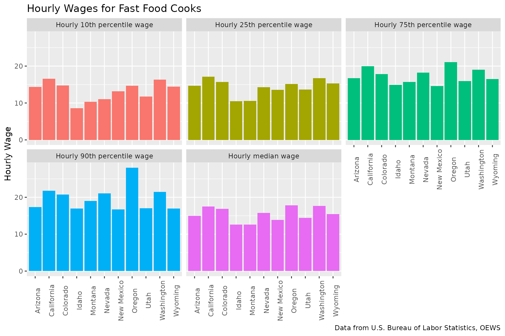
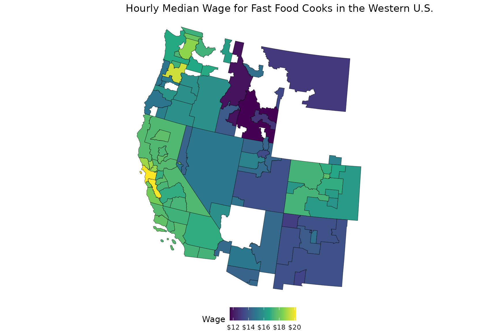

Working with OEWS Data
using_get_oews.RmdGeneral Concepts
BLSloadR streamlines access to data from the U.S. Bureau
of Labor Statistics. Its primary benefit is in providing data in a handy
form so that it can be manipulated and used to compare data across
areas, periods, and data types. One simple example includes using the
data across areas to calculate percentiles for a particular data element
to compare a single state to the range of experiences across other
states.
Step 1: Accessing the Data
Accessing data from the BLS is simple. Here, we can use
get_oews() to pull up the Occupational Employment and Wage
Statistics (OEWS) data. OEWS data is a national series with a number of
data elements for each occupation at national, state, and local levels.
The local areas are divided into metropolitan areas and nonmetropolitan
areas, which are combinations of individual counties. Even with only a
single time period available (the most recently estimated year), the
data set contains over 6 million rows of data, so these downloads will
take a little time.
# Get the LAUS data using BLSloadR
bls_import <- get_oews()
# Get corresponding OEWS shapes
estimate_year <- unique(bls_import$year)
area_shapes <- get_oews_areas(ref_year = estimate_year)Step 2: Filtering and Ordering the Data
Next, we will trim down the size of the OEWS data frame to focus on
the Western United States. We can use the areatype_code to
distinguish between states and substate areas, and we can use the
state_code - the FIPS for the state - to narrow the data
set. We’ll filter here to the following states:
| State Name | State FIPS |
|---|---|
| Arizona | 04 |
| California | 06 |
| Colorado | 08 |
| Idaho | 16 |
| Montana | 30 |
| Nevada | 32 |
| New Mexico | 35 |
| Oregon | 41 |
| Utah | 49 |
| Washington | 53 |
| Wyoming | 56 |
We’ll use the areatype_code to create two data tables -
one for statewide data and one for substate areas for further
analysis.
western_metros <- bls_import |>
dplyr::filter(state_code %in% c("04", "06", "08", "16", "30", "32", "35", "41", "49", "53", "56"),
areatype_code == "M")
western_states <- bls_import |>
dplyr::filter(state_code %in% c("04", "06", "08", "16", "30", "32", "35", "41", "49", "53", "56"),
areatype_code == "S")
nrow(western_states)
#> [1] 133382Even narrowing to just state-level data in the Western United States, we sill have over 100,000 rows of data, because OEWS represents several different data types as individual rows. We can pivot this data to better reflect each discrete occupation/area combination as a single row, with columns providing descriptions of that data. To do this, we need to drop the series_id, as this uniquely identifies the area, occupation, and data type and so interfere with pivoting the data. While we’re at it, we’ll remove some columns which do not have unique values at the state and substate levels. Let’s clean this up!
unique(western_states$seasonal)
#> [1] "U"
unique(western_states$industry_code)
#> [1] "000000"
unique(western_states$areatype_code)
#> [1] "S"
unique(western_states$state_code)
#> [1] "04" "06" "08" "16" "30" "32" "35" "41" "49" "53" "56"
western_states <- western_states |>
select(-series_id, -seasonal, -industry_code, -areatype_code, -area_code, -datatype_code) |>
pivot_wider(names_from = datatype_name, values_from = value)
head(western_states)
#> # A tibble: 6 × 23
#> year occupation_code occupation_name occupation_description state_code
#> <chr> <chr> <chr> <chr> <chr>
#> 1 2024 000000 All Occupations "" 04
#> 2 2024 110000 Management Occupations "" 04
#> 3 2024 111011 Chief Executives "Determine and formul… 04
#> 4 2024 111021 General and Operation… "Plan, direct, or coo… 04
#> 5 2024 111031 Legislators "Develop, introduce, … 04
#> 6 2024 112011 Advertising and Promo… "Plan, direct, or coo… 04
#> # ℹ 18 more variables: area_name <chr>, Employment <dbl>,
#> # `Employment percent relative standard error` <dbl>,
#> # `Hourly mean wage` <dbl>, `Annual mean wage` <dbl>,
#> # `Wage percent relative standard error` <dbl>,
#> # `Hourly 10th percentile wage` <dbl>, `Hourly 25th percentile wage` <dbl>,
#> # `Hourly median wage` <dbl>, `Hourly 75th percentile wage` <dbl>,
#> # `Hourly 90th percentile wage` <dbl>, `Annual 10th percentile wage` <dbl>, …Step 3: Exploring the Data with Tables
Now we have a data set that we can more easily summarize and work with. Each observation is a single row (an occupation in a place), and the columns provide information about that observation (employment level, wage bands, employment concentration).
Let’s start simple, and create a quick table that shows the spread of employment and hourly wages by state.
estimate_year <- unique(western_states$year)
western_states |>
filter(occupation_name == "All Occupations") |> # Total for All Occupations
select(area_name, Employment, `Hourly 10th percentile wage`, `Hourly 25th percentile wage`, `Hourly median wage`, `Hourly 75th percentile wage`, `Hourly 90th percentile wage`) |>
gt() |>
fmt_number(columns = Employment, decimals = 0) |>
fmt_currency(columns = contains("Hourly")) |>
cols_label("area_name" = "State") |>
tab_header(title = "OEWS Employment Statistics for All Occupations",
subtitle = paste0("Western United States, ",estimate_year))| OEWS Employment Statistics for All Occupations | ||||||
| Western United States, 2024 | ||||||
| State | Employment | Hourly 10th percentile wage | Hourly 25th percentile wage | Hourly median wage | Hourly 75th percentile wage | Hourly 90th percentile wage |
|---|---|---|---|---|---|---|
| Arizona | 3,196,750 | $15.66 | $17.96 | $23.47 | $36.60 | $54.48 |
| California | 18,057,850 | $16.95 | $18.87 | $27.38 | $46.31 | $75.58 |
| Colorado | 2,891,210 | $16.94 | $19.91 | $27.99 | $42.45 | $64.45 |
| Idaho | 844,910 | $13.60 | $17.05 | $22.34 | $31.71 | $48.18 |
| Montana | 510,020 | $13.69 | $17.38 | $22.77 | $32.65 | $46.88 |
| Nevada | 1,529,480 | $13.25 | $16.91 | $22.33 | $33.62 | $49.82 |
| New Mexico | 860,880 | $13.51 | $16.28 | $22.05 | $34.72 | $51.30 |
| Oregon | 1,965,700 | $16.60 | $19.00 | $25.67 | $39.01 | $61.12 |
| Utah | 1,709,790 | $14.06 | $17.61 | $23.36 | $36.43 | $53.67 |
| Washington | 3,539,650 | $18.03 | $22.00 | $29.61 | $47.83 | $70.01 |
| Wyoming | 278,500 | $13.59 | $17.44 | $23.64 | $35.28 | $49.14 |
Or, we could as easily look at more detailed occupations, as the Standard Occupational Classification code used by OEWS includes both major groups and detailed occupations.
western_states |>
select(occupation_code, occupation_name) |>
distinct() |>
filter(substr(occupation_code,1,2) == "35") |>
gt()| occupation_code | occupation_name |
|---|---|
| 350000 | Food Preparation and Serving Related Occupations |
| 351011 | Chefs and Head Cooks |
| 351012 | First-Line Supervisors of Food Preparation and Serving Workers |
| 352011 | Cooks, Fast Food |
| 352012 | Cooks, Institution and Cafeteria |
| 352014 | Cooks, Restaurant |
| 352015 | Cooks, Short Order |
| 352019 | Cooks, All Other |
| 352021 | Food Preparation Workers |
| 353011 | Bartenders |
| 353023 | Fast Food and Counter Workers |
| 353031 | Waiters and Waitresses |
| 353041 | Food Servers, Nonrestaurant |
| 359011 | Dining Room and Cafeteria Attendants and Bartender Helpers |
| 359021 | Dishwashers |
| 359031 | Hosts and Hostesses, Restaurant, Lounge, and Coffee Shop |
| 359099 | Food Preparation and Serving Related Workers, All Other |
Working from this list, we can filter our data set to a particular occupation to gain insights into employment and wage trends. We’ll also include the location quotient, to help us explore whether any states have an unusually high concentration of employment in this occupation.
western_states |>
filter(occupation_name == "Cooks, Fast Food") |>
select(area_name, Employment, `Hourly 10th percentile wage`, `Hourly 25th percentile wage`, `Hourly median wage`, `Hourly 75th percentile wage`, `Hourly 90th percentile wage`, `Location Quotient`) |>
gt() |>
fmt_number(columns = Employment, decimals = 0) |>
fmt_currency(columns = contains("Hourly")) |>
cols_label("area_name" = "State") |>
tab_header(title = "OEWS Employment Statistics for Fast Food Cooks",
subtitle = paste0("Western United States, ",estimate_year))| OEWS Employment Statistics for Fast Food Cooks | |||||||
| Western United States, 2024 | |||||||
| State | Employment | Hourly 10th percentile wage | Hourly 25th percentile wage | Hourly median wage | Hourly 75th percentile wage | Hourly 90th percentile wage | Location Quotient |
|---|---|---|---|---|---|---|---|
| Arizona | 11,220 | $14.35 | $14.66 | $14.95 | $16.76 | $17.30 | 0.81 |
| California | 136,550 | $16.54 | $17.11 | $17.50 | $20.00 | $21.77 | 1.74 |
| Colorado | 9,560 | $14.75 | $15.67 | $16.89 | $17.86 | $20.77 | 0.76 |
| Idaho | 2,090 | $8.59 | $10.52 | $12.56 | $14.91 | $16.91 | 0.57 |
| Montana | 1,310 | $10.30 | $10.57 | $12.63 | $15.71 | $18.99 | 0.59 |
| Nevada | 6,610 | $11.00 | $14.27 | $15.72 | $18.21 | $21.03 | 1.00 |
| New Mexico | 2,600 | $13.15 | $13.57 | $13.86 | $14.58 | $16.74 | 0.70 |
| Oregon | 4,360 | $14.70 | $15.11 | $17.80 | $21.11 | $28.00 | 0.51 |
| Utah | 6,250 | $11.73 | $13.61 | $14.41 | $15.91 | $17.05 | 0.84 |
| Washington | 8,630 | $16.33 | $16.73 | $17.69 | $19.05 | $21.42 | 0.56 |
| Wyoming | 440 | $14.45 | $15.27 | $15.48 | $16.51 | $16.92 | 0.36 |
We can also explore the uniqueness of an occupation, by seeing how the concentration in an area varies compared to the concentration nationally using the location quotient. The location quotient (LQ) is defined as the ratio of employment in an occupation in an area to total employment in that area, divided by the ratio of employment in that occupation in the United States to total employment in the United States. This means that a higher LQ indicates a higher concentration of employment in an area compared to the concentration of employment in that occupation in the country.
western_states |>
select(area_name, occupation_name, `Location Quotient`) |>
arrange(-`Location Quotient`) |>
head(20) |>
gt()| area_name | occupation_name | Location Quotient |
|---|---|---|
| Oregon | Personal Care and Service Workers, All Other | 28.44 |
| Oregon | Logging Workers, All Other | 25.31 |
| Wyoming | Roof Bolters, Mining | 25.31 |
| Wyoming | Gas Plant Operators | 24.04 |
| Nevada | First-Line Supervisors of Gambling Services Workers | 22.29 |
| Nevada | Gambling Dealers | 21.51 |
| Nevada | Taxi Drivers | 20.75 |
| Wyoming | Roustabouts, Oil and Gas | 19.05 |
| Montana | Forest and Conservation Technicians | 18.85 |
| New Mexico | Derrick Operators, Oil and Gas | 17.39 |
| Oregon | Semiconductor Processing Technicians | 17.27 |
| Nevada | Gambling Managers | 16.62 |
| Nevada | Gambling Cage Workers | 15.86 |
| Montana | Forestry and Conservation Science Teachers, Postsecondary | 15.81 |
| Wyoming | Railroad Brake, Signal, and Switch Operators and Locomotive Firers | 15.40 |
| New Mexico | Nuclear Engineers | 14.11 |
| Nevada | Gambling and Sports Book Writers and Runners | 13.76 |
| New Mexico | Wellhead Pumpers | 13.62 |
| Nevada | Loading and Moving Machine Operators, Underground Mining | 13.39 |
| Wyoming | Wellhead Pumpers | 13.21 |
Step 4: Exploring the Data with Graphs
Seeing that different states have different wage levels and employment concentrations for Fast Food Cooks, let’s explore this data a little more. First, lets take a quick look at wage levels. In order to use the wage levels in my ggplot as an aesthetic, I’ll pivot the data longer again.
western_states |>
filter(occupation_name == "Cooks, Fast Food") |>
select(area_name, `Hourly 10th percentile wage`, `Hourly 25th percentile wage`, `Hourly median wage`, `Hourly 75th percentile wage`, `Hourly 90th percentile wage`) |>
pivot_longer(cols = `Hourly 10th percentile wage`:`Hourly 90th percentile wage`, values_to = "value", names_to = "measure") |>
ggplot(aes(x = area_name, y = value, fill = measure)) +
geom_col() +
facet_wrap(~measure) +
labs(
title = "Hourly Wages for Fast Food Cooks",
x = NULL, y = "Hourly Wage",
caption = "Data from U.S. Bureau of Labor Statistics, OEWS"
) +
theme(axis.text.x = element_text(angle = 90),
legend.position = "none")
western_metros |>
filter(occupation_name == "Cooks, Fast Food",
datatype_name == "Hourly median wage") |>
left_join(area_shapes, by = c("area_code" = "oews_area_code")) |>
sf::st_as_sf() |>
ggplot(aes(fill = value)) +
geom_sf() +
labs(title = "Hourly Median Wage for Fast Food Cooks in the Western U.S.",
fill = "Wage") +
scale_fill_viridis_c(labels = scales::dollar) +
theme_void() +
theme(
legend.position = "bottom"
)